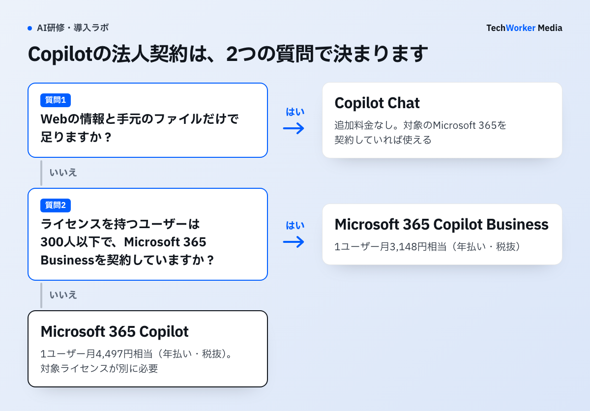
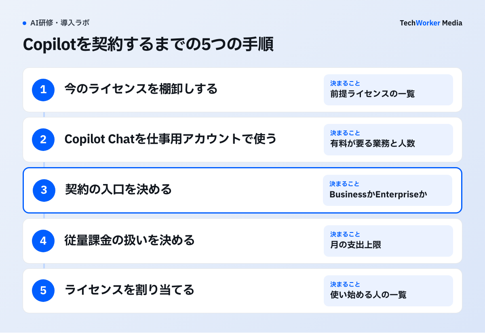

Microsoft Copilotの法人契約は、次の4つに分かれます。価格はすべて税抜です。2026年11月11日に、Microsoftの日本向け公式ページで確認しました。
- Copilot Chat：追加料金はかかりません。対象のMicrosoft 365を契約し、仕事用のアカウントでサインインすれば使えます。
- Microsoft 365 Copilot（大企業向け）：1ユーザー月4,497円相当です（年払い）。対象のMicrosoft 365ライセンスが別に必要です。
- Microsoft 365 Copilot Business（300人以下向け）：1ユーザー月3,148円相当です（年払い）。月払いは3,778円です。
- 従量課金：Copilot Coworkなどの高度な機能と、組織が作ったエージェントの一部は、使った分を別に払います。
この記事ではライセンスの契約と料金だけを扱います。研修にかかる費用はCopilot研修の費用相場で、無料版と有料版で研修をどう分けるかはCopilot ChatとMicrosoft 365 Copilotの研修の分け方で説明しています。
公式の料金ページはライセンスに含まれる機能と従量課金の機能をどう分けていますか？
日常的に使う機能はライセンスに含まれ、高度な機能は使った量に応じて別に課金されます。
原文（日本語）「チャットや Microsoft 365 アプリの Copilot など、日常的に利用する AI 機能はライセンスに含まれています。より高度な AI 機能は、使用量に応じて課金されます。現在、対象となるのは Copilot Cowork、Copilot Code、Copilot Autopilot、Work IQ API などです。」
引用は、料金ページの「どの機能が従量課金制ですか」という質問への回答です。ライセンスを買っても、すべての機能が定額になるわけではありません。稟議書では席の年額と従量課金の上限を、別の行に分けて書きます。
どの契約から検討するかは、次の2つの質問で決まります。

Copilotの法人向けの料金はいくらですか？
有料ライセンスは、大企業向けが1ユーザー月4,497円相当、300人以下向けのBusinessが月3,148円相当です（年払い・税抜）。Copilot Chatに追加料金はかかりません。
| 契約 | 料金（税抜・1ユーザー） | 条件 | 向いている会社 |
|---|---|---|---|
| Copilot Chat | 追加料金なし | 対象のMicrosoft 365サブスクリプションと、Microsoft Entraアカウント（仕事用のアカウント） | まず全社で試したい会社 |
| Microsoft 365 Copilot Business（アドオン） | 年払い：月3,148円相当 月払い：3,778円 | 対象のMicrosoft 365 Businessプランを契約中。テナントごとに最大300ユーザー | 300人以下で、Businessプランを使っている会社 |
| Business Standard と Copilot Business の同梱プラン | 年払い：月3,523円相当 月払い：4,228円 | Teamsを含むプランの表示価格 | Microsoft 365をこれから契約する会社 |
| Business Premium と Copilot Business の同梱プラン | 年払い：月4,797円相当 月払い：5,756円 | Teamsを含むプランの表示価格 | 高度なセキュリティも一緒にそろえたい会社 |
| Microsoft 365 Copilot（大企業向け） | 年払い：月4,497円相当 | 条件を満たすMicrosoft 365プランのライセンスが別に必要。既存の契約への追加はMicrosoftの担当者に問い合わせる | 300人を超える会社、E3やE5を契約している会社 |
| 従量課金（Copilotクレジット） | 使った分 | Copilot Cowork、Copilot Code、Copilot Autopilot、Work IQ APIなど | 高度な機能を一部の人が使う会社 |
| Copilot Studio（単体） | 25,000クレジットのパックが月29,985円。従量課金も選べる | テナント全体のライセンス。エージェントの利用にAzureサブスクリプションが必要 | 社外向けのエージェントを公開する会社 |
出典：Microsoft公式「Microsoft Copilot の価格」の一般法人向け・大企業向け・Copilot Studioの各ページ（2026年11月11日確認）。価格に消費税は含まれません。
表を読むときの注意は次の4つです。
- 「月相当」は年払いの価格です。年間サブスクリプションで、自動で更新されます。Businessの月払いは年払いより約20%高くなります（3,778円÷3,148円で計算）。
- Copilot Businessのアドオンには、キャンペーン価格があります。年払いで月2,698円相当です。期間は2026年7月1日から12月31日までで、対象のBusinessプランを契約中の会社だけが使えます。年間契約が条件で、この価格が適用されるのは初年度だけです。
- 一般法人向けのプランには、1か月の無料試用があります。申込みにクレジットカードが必要です。試用期間が終わると、自動で有料の契約に切り替わります。
- 同梱プランとアドオンのどちらが安いかは、今の契約で変わります。販売店の見積もりで、プランを切り替えた場合とアドオンを足した場合の年額を並べます。
年額は月額相当×12か月×人数で出します。大企業向けは1人あたり年53,964円で、100人なら年5,396,400円です。Businessのアドオンは1人あたり年37,776円で、50人なら年1,888,800円です。キャンペーン価格なら初年度は年1,618,800円で、差は27万円です。2年目からは通常価格に戻るため、稟議書には両方の年額を書きます。いずれも税抜で、前提になるMicrosoft 365の費用は含みません。
ChatGPT・Claude・Geminiを含む4社の料金比較表と稟議書の雛形は、下の枠から受け取れます。
無料のCopilot Chatではどこまで使えますか？
Webの情報を典拠にしたAIチャットと、OutlookのCopilot、Microsoft Copilotアプリが使えます。社内のデータを典拠にした回答は、有料ライセンスの範囲です。
公式ページはCopilot Chatを「Web典拠型のAIアシスタント」と説明しています。対象のMicrosoft 365プランを持つユーザーに、追加費用なしで含まれます。ファイルをアップロードして質問することもできますが、制限があります。
Word、Excel、PowerPoint、OneNoteの中でどこまで使えるかは、市場とライセンスによって異なります。自社のテナントで実際に開いて確かめます。
仕事用のアカウント（Microsoft Entraアカウント）でサインインすると、エンタープライズデータ保護が適用されます。個人のMicrosoftアカウントでもサインインできますが、チャットや保護の内容はアカウントごとに分かれます。社員には仕事用のアカウントで使うよう案内します。
Copilot Chatのユーザーが、組織で作ったエージェントを使う場合は従量課金になります。料金は設定したAzureサブスクリプションに請求されます。公式のメーター表では1メッセージあたり0.01ドルです（2026年11月5日更新の資料）。従量課金は既定では無効で、管理者が有効にします。
Business向けと大企業向けは、何が違いますか？
違いは人数の上限、前提になるライセンス、価格、買い方の4つです。Copilotの機能は同じだと、公式の資料に書かれています。
| 項目 | Microsoft 365 Copilot Business | Microsoft 365 Copilot（大企業向け） |
|---|---|---|
| 人数 | テナントごとに最大300ユーザー | 300人を超える組織はこちらを使う |
| 前提になるライセンス | Microsoft 365 Business Premium・Standard・Basic、Microsoft 365 Apps for Business、Microsoft Teams Essentials | Microsoft 365 E3・E5・F1・F3、Office 365 E1・E3・E5・F3 など |
| 価格（年払い・税抜） | 月3,148円相当 | 月4,497円相当 |
| 月払い | 3,778円 | 公式ページで確認できた価格は年払いのみ |
| 買い方 | 公式ページからアドオンを購入できる。1か月の無料試用がある | 既存の契約への追加はMicrosoftの担当者に問い合わせる |
出典：Microsoft Learn「Microsoft Copilot のライセンス オプション」（2026年11月5日更新）と公式の料金ページ（いずれも2026年11月11日確認）。
年払いの価格の差は1ユーザー月1,349円です。年にすると16,188円になります。300人以下でBusinessプランを使っている会社は、Copilot Businessを選ぶと費用を抑えられます。
300人を超える組織は大企業向けのライセンスを使う必要があります。採用や合併で300人に近づく会社は、契約の更新月と人数の見通しを先に確かめます。
ライセンスの一覧にはCopilotを含む「Microsoft 365 E7」も載っています。E7の価格はこの記事では確認していません。
製品名の表記には注意が要ります。Microsoft Learnは、Microsoft 365 CopilotがMicrosoft Copilotに、Microsoft 365 Copilot ChatがMicrosoft Copilot Chatに改称されたと案内しています。一方、2026年11月11日時点の料金ページの価格欄は「Microsoft 365 Copilot」のままです。稟議書には見積書に書かれた品名をそのまま写します。
従量課金のエージェントにはいくらかかりますか？
使った量で決まります。公式で確認できた単価は、Copilot Chatのエージェントが1メッセージ0.01ドル、Copilot Studioのパックが25,000クレジットで月29,985円です。
従量課金は対象によって3つに分かれます。請求の仕組みと管理する画面が違います。
- Copilot Chatで使う、組織のエージェントとSharePointエージェント。Azureのメーターで測り、Azureサブスクリプションに請求されます。管理者は課金ポリシーを作り、予算の上限と、一定の割合に達したときのメール通知を設定できます。
- 有料ライセンスの上で使う高度な機能。Copilot Cowork、Copilot Code、Copilot Autopilot、Work IQ APIなどです。Copilotクレジットという共通の単位を消費します。CoworkとCodeを使うには、Copilotのライセンスが必要です。払い方はクレジットの事前購入プラン、従量課金、プリペイドの容量パックから選びます。
- 単体のCopilot Studio。社外のWebサイトやアプリにエージェントを公開するときに使います。25,000クレジットのパックが月29,985円で、1クレジットあたり約1.2円です（29,985円÷25,000で計算）。事前購入プランでは費用を最大20%下げられると案内されています。
社内向けのエージェントは、ライセンスの範囲で作れます。公式ページによると、Microsoft 365 Copilotのライセンスを持つユーザーは、Copilot Studio（Copilot ChatまたはStandardハーネス）で社内向けのエージェントを追加費用なしで作って使えます。
支出はMicrosoft 365 管理センターの「Cost Management」で管理します。支出ポリシー、ユーザーごとの使用制限、上限に近づいたときの通知を設定できます。
支出ポリシーには、「新しいサービスの自動適用」という設定があります。既定で有効になっていて、今後追加されるサービスにも同じポリシーが適用されます。新しいサービスを追加の前に確認したい会社は、この設定をオフにします。
Coworkなどが消費するクレジットの数と、クレジットの円での単価は、今回確認した公式ページでは分かりませんでした。この記事には書いていません。Microsoftは利用量を試算する「Copilot クレジット見積もりツール」を案内しています。エージェントの公開と承認のルールは、Copilot Studioのガバナンス設計で扱っています。
申込みはどんな手順で進めますか？
ライセンスの棚卸し、Copilot Chatでの試用、契約の入口の決定、従量課金の設定、ライセンスの割り当ての5つの手順で進めます。

- 今のライセンスを棚卸しします。Microsoft 365 管理センターで、プラン名、ライセンスを持つユーザーの数、契約の更新月を確かめます。前提になるライセンスが無い人には、Copilotを追加できません。
- Copilot Chatを仕事用のアカウントで使います。追加料金がかからないので、先に全員で使えます。メールの下書きや調べものなど、どの業務で足りて、どの業務で足りないかを記録します。
- 契約の入口を決めます。300人以下でBusinessプランを使っている会社は、公式ページからCopilot Businessのアドオンを購入できます。大企業向けはMicrosoftの担当者か、ふだん取引している販売店に見積もりを頼みます。
- 従量課金の扱いを決めます。有効にするか、誰に使わせるか、月の上限をいくらにするかを決めます。有効にする場合は、支出ポリシーと使用制限を先に置きます。
- ライセンスを割り当てます。購入したライセンスを、Microsoft 365 管理センターでユーザーに割り当てます。手順2で「足りない」と分かった業務の担当者から始めます。
全員分を一度に買う必要はありません。有料のライセンスが要るのは、社内のデータを典拠にした回答や、Word・Excel・Teamsの中のCopilotを使う人です。
稟議では何を聞かれますか？
聞かれるのは、総額、無料版で足りない理由、データの扱い、従量課金の上限、やめるときの条件の5つです。
- 総額はいくらか。Copilotの年額に、前提になるMicrosoft 365の費用、従量課金の上限、研修と定着の費用を足します。価格は税抜なので、消費税を加えた額も書きます。
- なぜ無料のCopilot Chatでは足りないのか。手順2の記録を使います。「社内の文書を典拠に答えさせたい業務が、どの部署に何人分あるか」を示します。
- 入力したデータはどう扱われるか。公式ページによると、プロンプトと応答はMicrosoft 365のサービス境界の中にとどまり、基盤となる大規模言語モデルのトレーニングには使われません。Copilotは組織の既存のMicrosoft 365のセキュリティ設定に従います。
- 従量課金はいくらまで増えるか。支出ポリシーで決めた月の上限を書きます。従量課金を有効にしない場合は、そう書きます。
- やめるときはどうなるか。年間サブスクリプションは自動で更新されます。一般法人向けは、有料の契約を始めてから7日間はキャンセルでき、日割りで返金されます。大企業向けの解約の条件は顧客の区分や製品によって異なります。どちらも、解約すると関連するデータは削除されます。
データの扱いでは社内の共有設定も確かめます。Copilotは既存のセキュリティ設定に従うため、共有範囲が広すぎるファイルは、そのまま回答の材料になります。点検の手順はSharePointの権限の点検にまとめています。
稟議書に入れる項目
□ 対象の部署・人数・期間
□ 契約の種類と選んだ理由（Copilot Chat・Copilot Business・大企業向けの比較）
□ 年額（Copilotのライセンス、前提ライセンス、消費税）
□ 従量課金の扱い（有効にするか、月の上限、管理する人）
□ データの扱いと、共有設定の点検の結果
□ 研修と定着の計画
□ 更新月と、見直しの条件（利用が基準に届かないときに席を減らす線）
ほかの生成AIと並べて説明を求められることもあります。ChatGPT・Claude・Geminiを含めた比較は生成AIの法人契約の比較に、Claudeの契約と料金はClaudeの法人契約と料金に、Geminiとの違いはGeminiとCopilotの比較にまとめています。
よくある失敗には、どんなものがありますか？
多いのは前提ライセンスの見落とし、税抜と年払いの読み違い、キャンペーン価格での予算化の3つです。
- 前提になるライセンスの費用を入れない。Microsoft 365 Copilotは単体では契約できません。対象のMicrosoft 365ライセンスを持たない人がいると、その分の費用が後から出てきます。
- 表示価格を、税込の月払いだと読む。公式ページの価格は税抜で、「月相当」は年払いの額です。月払いにすると、Businessでは約20%高くなります。
- キャンペーン価格のまま、2年目の予算を組む。月2,698円相当が適用されるのは初年度だけです。2年目からは月3,148円相当になります。
- 全員分を一度に買う。Webの情報と手元のファイルで足りる人は、Copilot Chatで仕事ができます。有料の席は、足りないと分かった業務の担当者から配ります。
- 上限を決めずに従量課金を有効にする。エージェントや高度な機能は、使った分だけ請求されます。支出ポリシーと通知を置いてから有効にします。
- 300人の上限を見落とす。Copilot Businessはテナントごとに最大300ユーザーです。人数が増える見通しの会社は、大企業向けへ移る時期を更新月に合わせて考えます。
ライセンスを配っても、使い方が分からなければ席の費用だけが残ります。研修にいくらかけるかはCopilot研修の費用相場で、利用が続かないときの手当てはCopilotが定着しない原因と対策で扱っています。
よくある質問
使えます。対象のMicrosoft 365サブスクリプションを持つMicrosoft Entraアカウントのユーザーは、Copilot Chatを追加料金なしで使えます。社内のデータを典拠にした回答や、Word・Excel・Teamsの中のCopilotには、有料のライセンスが必要です。
できません。条件を満たすMicrosoft 365プランのライセンスが別に必要です。Microsoft 365をこれから契約する300人以下の会社には、Business StandardやBusiness PremiumとCopilot Businessの同梱プランがあります。
一般法人向けのCopilot Businessは月払いを選べます。アドオンは1ユーザー月3,778円（税抜）で、年払いの月3,148円相当より約20%高くなります。大企業向けは、公式ページで確認できた価格が年払いの月4,497円相当だけです。
公式ページには、プロンプトと応答は基盤となる大規模言語モデルのトレーニングには使用されないと書かれています。プロンプトと応答は、Microsoft 365のサービス境界の中にとどまります。
Copilot Businessはテナントごとに最大300ユーザーまでです。Microsoftの資料では、300人を超える組織は大企業向けのライセンスを使う必要があります。大企業向けは年払いで1ユーザー月4,497円相当（税抜）です。
次の一歩は何から始めればよいですか？
今のMicrosoft 365のプランと人数を確かめ、Copilot Chatを仕事用のアカウントで使い始めます。
- Microsoft 365 管理センターで、プラン名、ライセンスを持つユーザーの数、更新月を確かめます。
- Copilot Chatを2〜4週間使い、有料のライセンスが要る業務と人数を記録します。
- 年額と従量課金の上限を出し、稟議書の項目を上から埋めます。
契約の選び方から稟議書の組み立て、研修と定着まで、TechWorkerが一緒に進めます。検討の段階のご相談も受けています。
配った後、どのエージェントが使われているかはCopilotのエージェント利用状況レポートで確かめられます。
出典と確認範囲
確認日：2026年11月11日。価格はすべて日本向け公式ページの表示で、消費税を含みません。Teamsを含まないプランの価格、Microsoft 365 E7の価格、Copilotクレジットの円での単価、契約できる最少の人数は、確認できなかったため書いていません。価格、キャンペーン、製品名は変わるため、契約の前に公式ページと見積書で確かめてください。
- Microsoft Copilot の価格（一般法人向けプラン）
- 大企業向けの Microsoft Copilot プラン
- Copilot Studio のプラン
- Microsoft Learn：Microsoft Copilot のライセンス オプション（2026年11月5日更新）
- Microsoft Learn：Copilot クレジットの使用量ベースの課金とコスト管理を理解する（2026年11月5日更新）
- Microsoft Learn：Microsoft Copilot 従量課金制サービスの概要（2026年11月5日更新）
- Microsoft Learn：Microsoft Copilot 従量課金制サービスのメーター（2026年11月5日更新）
- Microsoft Learn：Copilot Chat の管理（2026年11月5日更新）